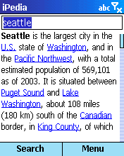

| |
Products | Downloads | Buy | Documentation | News | Support |
|
|
iPedia requires an MS Smartphone (e.g. MPx200, i600, SPV E100 and E200 etc.)
with wireless internet connection. It's not signed so it might not work on
application locked devices.
Please try the FREE TRIAL version first to check compatibility. |
| Download iPedia. You can install ipedia_sm_1_0.cab file wirelessly directly on your device or run ipedia_sm_1_0_setup.exe setup program on your computer. |
|
Upon startup iPedia displays About screen which includes, among others,
a link to a tutorial, number of articles currently available and the date of
last encyclopedia database update.
The database is constantly updated so watch the number of articles grow! |
|

To read an encyclopedia article about a given subject, type it in the text
box and press "Search".
For example, to read article on Seattle, type 'seattle' in the text box. iPedia will download article and display it. If a definition doesn't fit on one screen it can be scrolled using up/down buttons. |
| Encyclopedia articles often link to other articles. Use "Linked articles" menu item to get a list of all articles linked from current article. To read the article, select it from the list. |
|
'Search' takes you directly to an article with a given title. To find all
articles that mention a given word, use 'Extended search' menu item.
In response you'll get a list of articles containing a given word.
In the example: list of all articles containing word 'Seattle' |
| To read an article, simply select it from the list. |
| At any time you can get a list of results for the last extended search. |
|
You can also refine a search to narrow down the list of results. Let's assume
that your search for 'Seattle' returned too many articles. You can add additional
search word e.g. "keyarena" and press "Refine" button.
In response you'll get a (smaller) list of articles that contain both 'Seattle' and 'KeyArena' words. |
Other menu options:
|
| For a few ideas on what kind of information you can get with iPedia, read about iPedia usage scenarios. |
 Unregistered version of iPedia limits the number of articles you can read.
In order to remove that limit, you need to purchase registration code.
After purchasing registration code is e-mailed to you. We strongly recommend saving
it in a safe place for future reference.
Unregistered version of iPedia limits the number of articles you can read.
In order to remove that limit, you need to purchase registration code.
After purchasing registration code is e-mailed to you. We strongly recommend saving
it in a safe place for future reference.
Use menu item 'Register' to enter registration code. Press 'Later' to postpone registration process. Press 'Register' to verify registration code. Registration code consists of numbers only. |
 iPedia checks registration code and will inform you if it's not correct giving
you an option to correct registration code.
iPedia checks registration code and will inform you if it's not correct giving
you an option to correct registration code.
If you re-install iPedia you might need to re-enter registration code, so please keep it for future reference. |
 To check if there's an updated version of iPedia,
select menu item 'About/Check updates'. This will launch a built-in web browser
with a web page showing if the installed version of iPedia is the latest.
To check if there's an updated version of iPedia,
select menu item 'About/Check updates'. This will launch a built-in web browser
with a web page showing if the installed version of iPedia is the latest.
You can also use menu item 'About/ArsLexis home' to visit a version of ArsLexis website optimized for viewing on a Smartphone. On that page you'll find description of our software for Smartphone and links to direct downloads. |
|
We strive to provide great support for our software. To obtain support please visit support page on our website. To provide feedback to our development team, suggest improvements, discuss ideas and exchange tips and tricks with other users, participate in our Yahoo! based discussion group http://groups.yahoo.com/group/arslexis. |